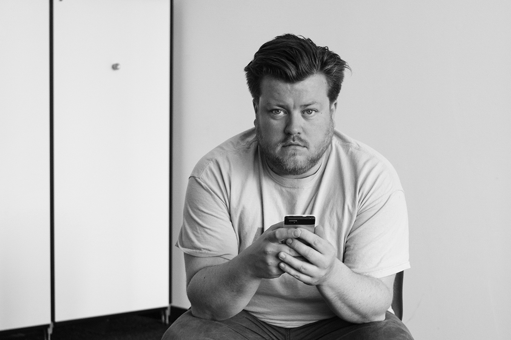

Constant Dullaart, born September 27, 1979, in Leiderdorp, Netherlands, is a Dutch conceptual artist known for his digital artworks. His pieces often critique online platforms and explore themes like internet culture and surveillance. Dullaart's interventions in social media and his experimentation with various digital mediums have earned him international recognition, with exhibitions at institutions like the New Museum in New York and the Venice Biennale.
